layer1 / rescued / ID 7602 / seed17 / true general_cargo / fixed rival chemical_tanker
baseline → arm: chemical_tanker → general_cargo ; fixed margin -0.829311 → 0.493446; NLL 1.439758 → 0.677552
VV

VH

136条源适配样本的小范围研发；160条反复复用的开发集不是独立确认集。三seed逐一匹配baseline，不将模型平均概率作为主结果；seed不是独立船只或独立数据集。OA/BA为百分数，差值为百分点；BA仅平均开发集中实际出现的7类。NLL为自然对数交叉熵，Brier为8类概率平方误差之和；后二者越低越好。参考库固定16条、每类2条，其中1条无VH；不据外观命名物理原因。
每张图左侧为原chip，右侧为模型160像素裁剪/填充；均1:1像素，不拉伸、不归一化显示。缺失VH明确标记。参考类别固定自initial原基线，未随新预测替换。图像观察与解释待主代理完成。
baseline → arm: chemical_tanker → general_cargo ; fixed margin -0.829311 → 0.493446; NLL 1.439758 → 0.677552
baseline → arm: general_cargo → chemical_tanker ; fixed margin 0.461633 → -0.998958; NLL 0.504554 → 1.325528
baseline → arm: container → container ; fixed margin 2.567651 → 1.125614; NLL 0.083960 → 0.298438
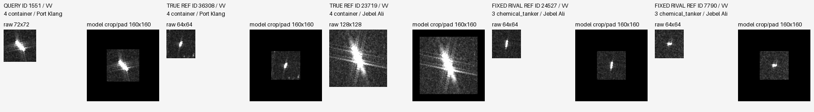
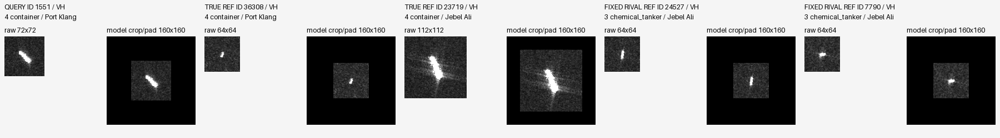
baseline → arm: crude_oil_tanker → bulk_carrier ; fixed margin -3.754855 → -6.197286; NLL 4.866188 → 6.673787
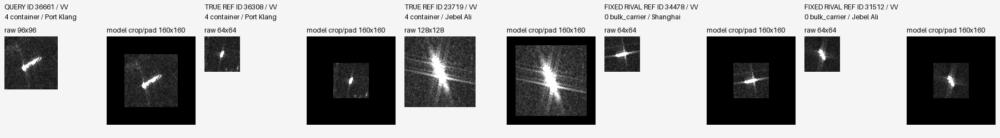
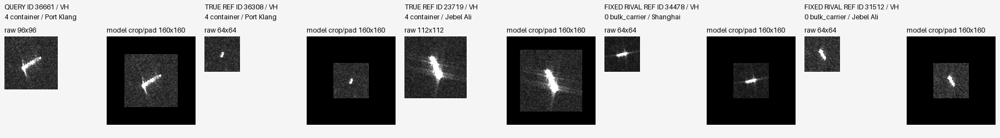
baseline → arm: bulk_carrier → crude_oil_tanker ; fixed margin -0.187241 → 1.076455; NLL 0.829390 → 0.357503

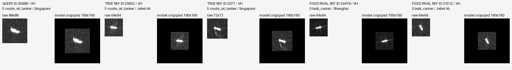
baseline → arm: chemical_tanker → general_cargo ; fixed margin 0.235659 → -0.298461; NLL 0.714209 → 0.971651


baseline → arm: bulk_carrier → bulk_carrier ; fixed margin 2.239895 → 1.065854; NLL 0.101894 → 0.296677

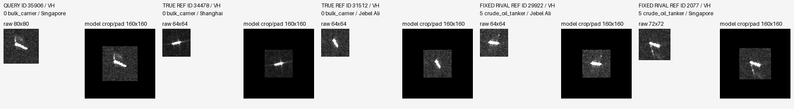
baseline → arm: bulk_carrier → bulk_carrier ; fixed margin -9.774945 → -7.401431; NLL 9.812899 → 7.646925


baseline → arm: chemical_tanker → general_cargo ; fixed margin -0.829311 → 0.688088; NLL 1.439758 → 0.561314
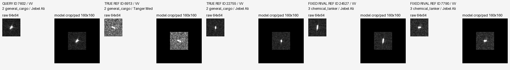
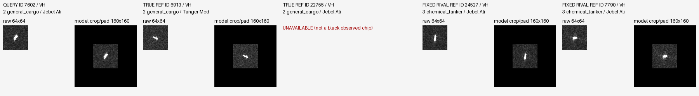
baseline → arm: general_cargo → bulk_carrier ; fixed margin 1.023754 → -0.289571; NLL 0.321803 → 0.866799
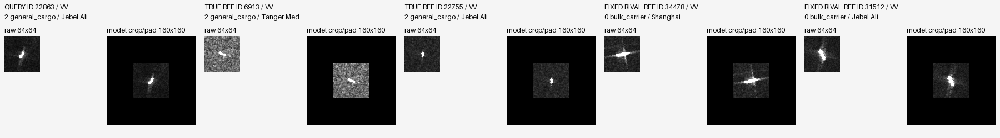
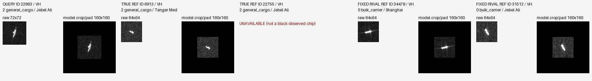
baseline → arm: bulk_carrier → bulk_carrier ; fixed margin 0.605597 → 2.528362; NLL 0.437787 → 0.078201
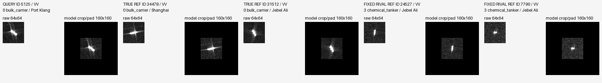
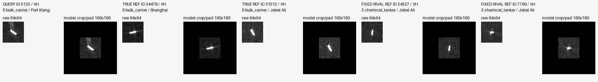
baseline → arm: bulk_carrier → general_cargo ; fixed margin -3.984151 → -0.151871; NLL 4.649563 → 1.809263
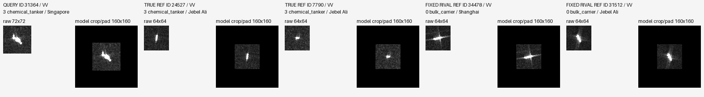
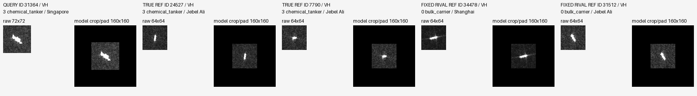